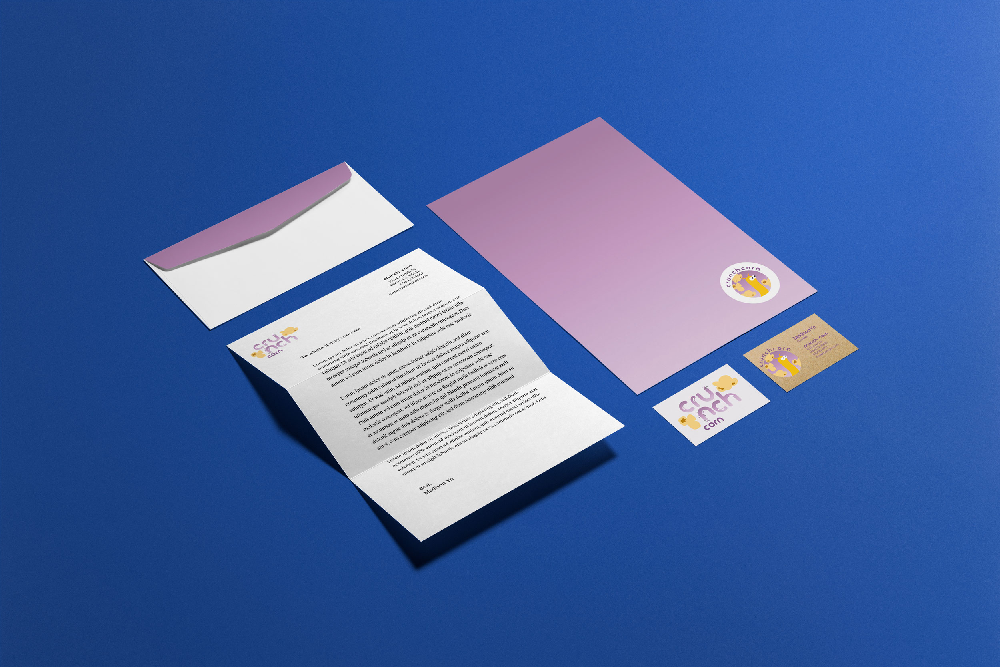
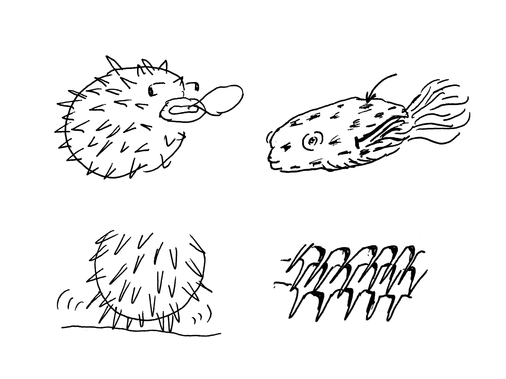
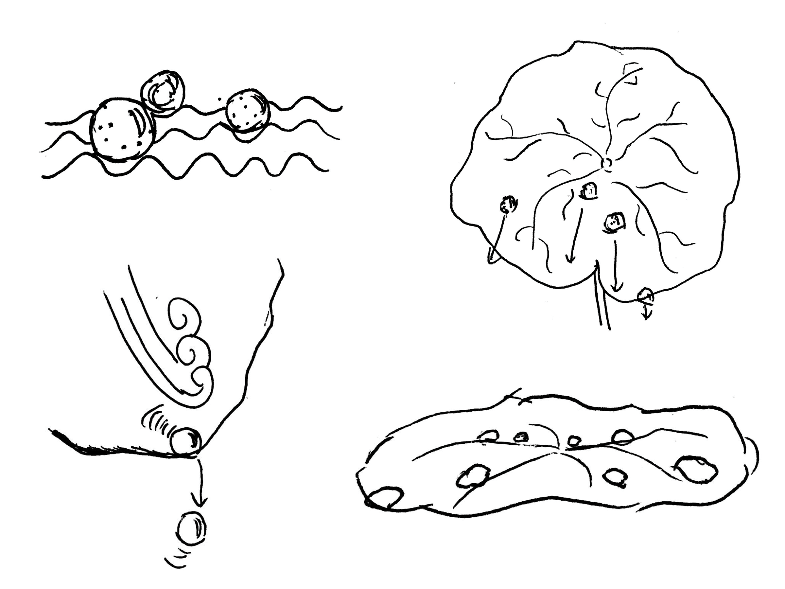
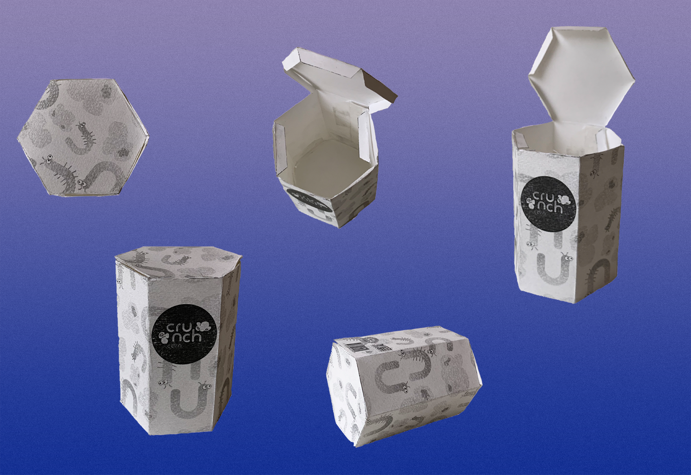

Crunch Corn
This was an independent 5 week Branding and Packaging Design project that explored graphic standard principles and packaging influenced by biomimicry. Tools included Adobe Illustrator, Photoshop, and Indesign.
Background
The market for insect food products has become an expanding industry as they provide an alternative to the depletion of traditional food sources. Insects are rich in protein and contain a high nutritional profile, and offer a more sustainable option to animal protein.
Objective
Design a brand and package that increases exposure for insect food products and appeals to a youthful audience.
The Concept
In the burgeoning industry of insect food products, Crunch Corn provides a unique option of crunchy insects, such as mealworms and crickets, in combination with popcorn coated with insect dust. Our initiative at Crunch Corn is to understand consumer concerns regarding insect-based foods and we strive to offer a product that is easily approachable. Whether you’re taking your first bite or returning for more, we always want you to be greeted by our crisp popcorn mixture and resealable packaging.
Crunch Corn is offered in a variety of flavors, from white cheddar to barbeque to salt and pepper. Using fresh, air-popped kernels and premiere sourced dried and dehydrated insects, we always ensure a high-quality product. We welcome folks of all ages to taste our product and discover the environmental and culinary benefits of insect-based food!
Brand Identity Development

My process began with searching for a company identity, using simple sketches and word association to flesh out ideas. I decided that a mixture of insect-based foods in combination with a traditional snack would be an appetizing option for those new to the acquired taste of bug.
The name Crunch Corn derived from the initial companies name, Crunch. However, due to its potential with copyright issues, I ideated more to find a name that still included “crunch.” Crunch Corn naturally arose as the most apt brand name; it’s catchy and plays off a common pantry snack, popcorn.
Logo Ideation

Sketches
Sketches
My strategy for developing a logo consisted of various sketches of shapes, objects, and different variations of typography. With the target audience being children, I concentrated on bubbly letters and playful imagery.

Digital Variations
While developing my logo, I went through an iterative process of receiving user feedback and adjusting colors and features accordingly. I found that my users identified most with logo variations that incorporated soft, rounded elements which appeared more playful and inviting. My final logo featured a rounded, bubble typeface with playful cartoon graphics that resonnated with my brand's youthful audience.
Graphic Standard



Business Card, Letter Head, and Envelope
Packaging Ideation and Research
In packaging ideation, I researched two biomimicry case studies to discover qualities in nature that could help me achieve protectiveness, security, and resealability for my package design.
Case Study 1: Porcupine Fish

Form
The porcupine fish is distinct in that it has large external spines that are only visible when puffed and serve as a means of protection. Suddenly, the fish becomes far less appetizing in its inflated and sharp form which usually deters predators.
Function
The porcupine fish, similar to Tetraodontidaes such as blowfish, has a unique method of self-defense to compensate for their slow locomotive function. When threatened, the fish inflates by sipping on water, or air when out of the water, allowing it to grow to a spherical shape. It’s extremely elastic stomach is capable of expanding to hold the water or air it swallows.
Biomimicry
These fish provide an interesting perspective on responsive package design. The inflation and spike producing process can act as a feature for package protection which is necessary for fragile items like food products. Finding a way to trigger inflation when a package is falling or bouncing around would keep its internal contents safe from breakage. Additionally, adding spikes around the outside would also keep the package from directly hitting surfaces with a great amount of force and further serve to maintain the composure of the contents.
Case Study 2: Lotus Leaf

Form
Lotus leaves are considered self-cleaning and water-resistant organisms due to their ability to shed water off their leaves. Many assume they have smooth leaves which encourages water to glide off, however, their biology is far from this assumption. Their leaves are entirely surfaced with hydrophobic microscale bumps that trap a maze of air upon which water droplets flow out from.
Function
Many plant leaves are hydrophobic due to the soluble lipids embedded in their cuticle layer, however, lotus leaves are unique in that they have microscale bumps that enhance them to superhydrophobicity. It’s roughened surface reduces adhesive forces and discourages water droplets from combining, thus they remain small spherical droplets. These droplets then adhere to any dirt particles on the leaf and move them entirely when the droplet is repelled from a slight change in the angle of the leaf.
Biomimicry
Applying biomimicry to lotus leaves is a technique that has been extensively studied with many attempting to imitate its hydrophobic level to serve as a self-cleaning function that removes the need for harmful soaps or detergents. Additionally, it provides a foundation for producing better water-resistant materials. These functions could be greatly beneficial for package design as a form of protection from precipitation or water that could potentially ruin the contents. Emulating the lotus leaf would reduce the need for unbiodegradable plastics that attempt to generate the same function.
Package Prototyping

After a few stages of package ideations and consideration of my biomimicry case studies, I decided on a polygonal shaped container. Similar to my case study on porcupine fish, I wanted to design a package that would provide protection to the contents inside if dropped or crushed. The corners of the hexagon create long pointed sides that act as spikes that would reduce the impact of a fall. However, the lid did not close securely so my main focus was finding a solution for a secure and resealable lid closure of the final package.
Final Package
My final package takes a hexagonal shape with a removable lid, which allows consumers to make this a multiple-use snack product if they would like. The inside also has two flaps to provide additional protection from outside elements and works to contain the food contents.